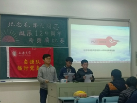
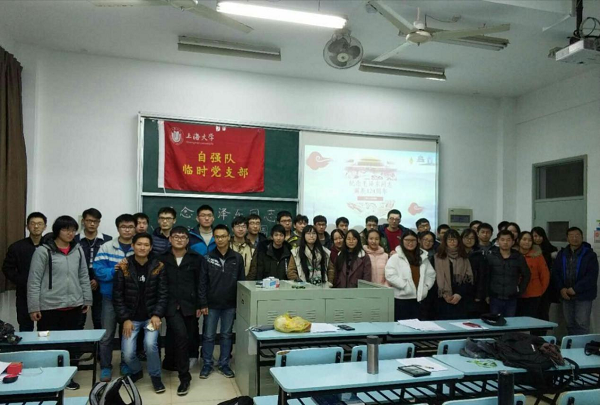

雄关漫道真如铁，而今迈步从头越
——记上海大学自强队纪念毛泽东同志诞辰124周年诗歌朗诵会
2017年12月26日晚上19时，上海大学自强队临时党支部纪念毛泽东同志诞辰124周年诗歌朗诵会在延长校区圆满举行。本次活动得到了自强队指导老师陈万米老师、黄慎之老师和自强队临时党支部书记叶立俊的大力关心和支持。
活动一开始，研一队员胡晨潇首先对毛泽东同志的生平事迹作了简要介绍。作为党的第一代中央领导集体的核心，这位领袖创建了中华人民共和国，建设了中国共产党，缔造了中国人民解放军，创立了毛泽东思想。正是这四大历史功绩，确立了毛泽东同志领导中国人民彻底改变自己命运和国家面貌的伟人地位，让后人铭记。稍后播放的习总书记在纪念毛泽东同志诞辰120周年座谈会上讲话视频，使同学们得以重温那段激动人心的历史，再次感受革命先辈在那段峥嵘岁月里的热血与激情，感受他们对共产主义事业崇高的信仰和不懈的追求。当天，分别来自自强队四大组别的共七支队伍报名参加了诗歌朗诵会。朗诵会由三个环节组成：第一轮为淘汰赛，分数最高的前四名进入下一轮；第二轮为对抗赛，选出进入决赛的二只队伍；第三轮为决赛，抽签获得朗诵篇目，最终产生全场冠军。比赛期间还增设了助阵环节。复杂的规则事项为之后的朗诵会增添了几分期待。
首先出场的第一队就立马抓住了我们的眼球。孟卿等同学以长征作为切入点，按照诗词创作的时间顺序，先后朗诵了《十六字令·三首》、《忆秦娥·娄山关》、《七律·长征》，让我们深刻感受到红军在长征途中表现出的对革命理想和事业无比忠诚坚定的信念和不怕牺牲的无产阶级乐观主义精神。在激昂奋进的背景音乐衬托之下，我们似乎看到了当年红军队伍义不容辞走上长征路，顽强生存、英勇战斗，克服一个又一个困难，从一个胜利走向另一个胜利，前赴后继，勇往直前。
袁天翱等同学选择的诗词《沁园春·长沙》，为我们展现了青年时期的毛泽东同志，“书生意气，挥斥方遒”，既有“问苍茫大地，谁主沉浮”的仰天长问，又有“到中流击水，浪遏飞舟”的浩然正气。另一首《沁园春·雪》则是毛泽东同志的巅峰之作，通篇气贯长虹。尤其是“山舞银蛇，原驰蜡象，欲与天公试比高”更是不同凡响，将伟人的豪情壮志表现得淋漓尽致。他们用富有韵味和感染力的朗诵搭配极具创意的表现形式，博得了台下师生的阵阵掌声。
|  |
除了出现在语文课本上反复吟诵的那几首耳熟能详的作品之外，部分参赛队伍还选择了会议报告，用较为理论性和逻辑性的言语再现了当年的场景。而决赛选择的现代诗篇《党旗飘飘》和《十九大颂》，以贯穿古今的形式回顾中国共产党一路走来的九十六年春秋，以史为鉴，相信在习总书记为核心的党中央坚强领导下，实现中华民族伟大复兴的“中国梦”指日可待。各组选手共同演绎，为大家带来了一场精彩纷呈的视听盛宴，同时还将那段波澜壮阔的历史和那些激情燃烧的岁月以其独特的魅力永远定格在我们的脑海之中，娓娓道来，精彩绝伦，引人入胜。

随后，自强队临时党支部书记叶立俊同学总结陈词。他说，毛泽东同志的诗词雅俗共赏，脍炙人口，深刻地展示了崇高的理想和坚定的信念，是中华民族不可多得的精神食粮。叶立俊同学强调，希望队员们借此机会，学习毛泽东的诗词，充分领略毛主席高瞻远瞩的政治远见和勇于开拓的非凡魄力，坚定实事求是的信念，增强求真务实的本领，时时处处将自强队“以党建推进科创、以科创促进党建”的发展理念牢记于心、付诸于行。
最后，以嘉宾身份出席本次诗歌朗诵会的自强队指导教师黄慎之老师有感而发，高度评价这一场比赛不仅在视觉和听觉上冲击着大家，更在心灵上感动着大家。毛泽东同志曾经说过，世界是你们的，也是我们的，但是归根结底是你们的，你们青年人朝气蓬勃，正在兴旺时期，好像早晨八九点钟的太阳。黄老师强调，毛泽东同志创立中国共产党的故事，是一个青春、激情、奋斗、献身的故事，那个时代的年轻人们，正是用他们的青春与热血，描绘出了一个新生的中国。他还号召全队向毛泽东同志学习，直面任何挑战，面对失败危局百折不回、坚定执着，面对胜利希望谦虚谨慎、洒脱豁达。值得一提的是，黄老师还现场高歌一曲，鼓励全体队员不断提升，努力让自己的人格变得更坚毅，学识变得更广博。
毛泽东同志是伟大的革命家、政治家、军事家、思想家，同时又是独领风骚的诗词巨匠，他创作的诗篇至今依然彰显出夺目的光辉和魅力，成为常悟常新的传世经典。上海大学自强队以诗歌朗诵会的形式纪念伟大领袖毛泽东同志诞辰124周年，一下子把我们拉回到了那段挑战与机遇并存的峥嵘岁月，诗词字里行间无不体现着伟大领袖毛泽东同志的刚毅果敢，从容淡定。而正是这种气定神闲，时刻警示着我们既要有“乱云飞渡仍从容”的淡定务实，又要有“不到长城非好汉”的进取精神，无愧今天的使命担当，而今迈步从头越，用汗水和希望奏出属于这个新时代的最强音！
上海大学自强队供稿
2017年12月27日